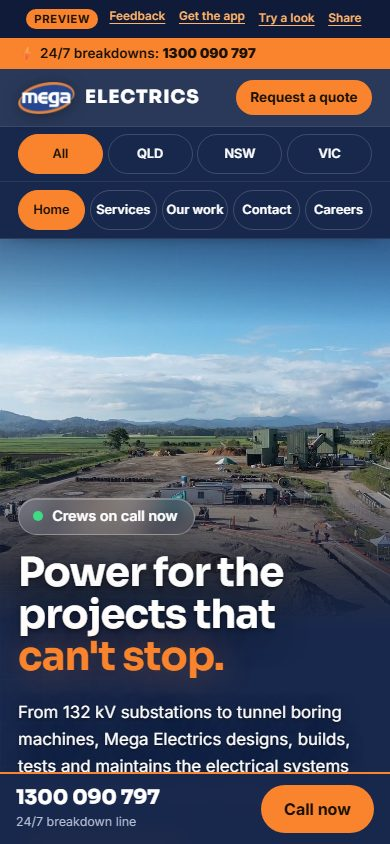
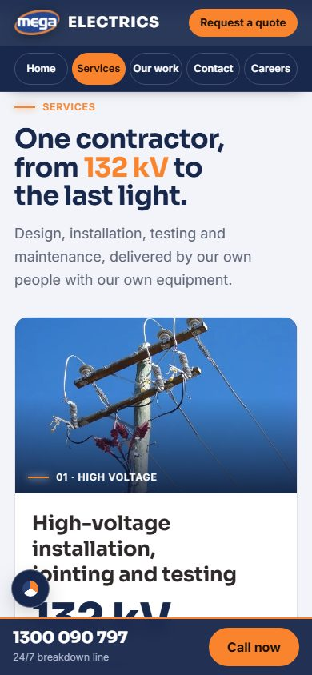
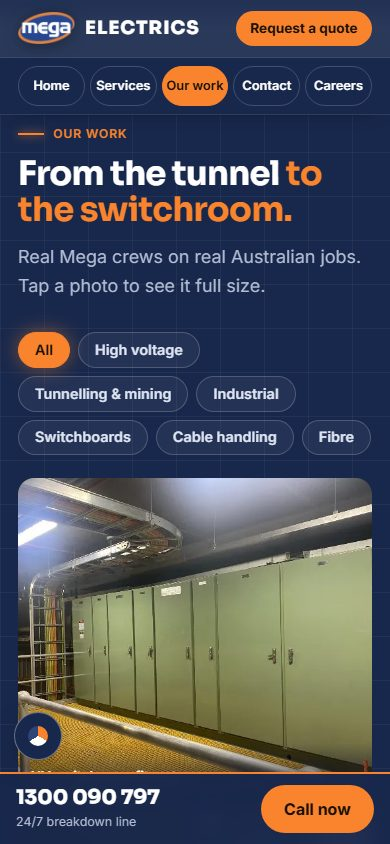
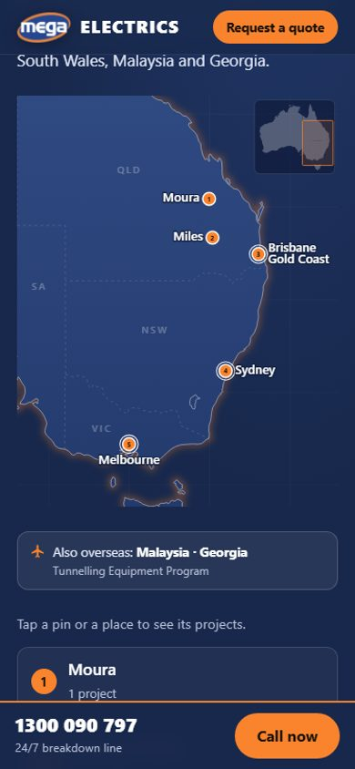
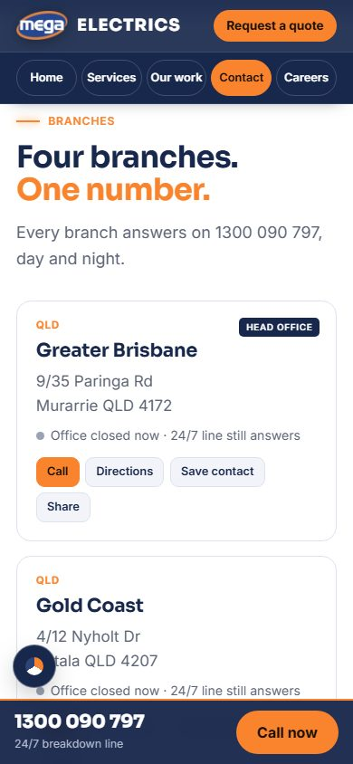
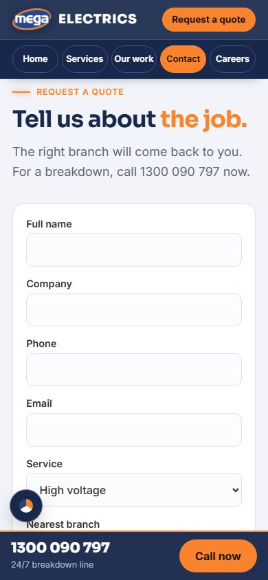
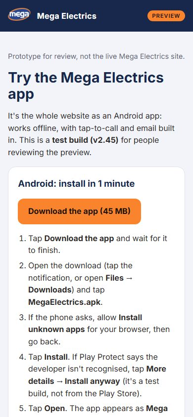

1
Home
The first screen: drone footage of a Mega site build, the 24/7 number, a quick-quote bar and your state (QLD, NSW, VIC). The tabs under the state buttons split the site into pages, so nobody has to scroll forever.
Open this →The new website and app, for Mega's management to review. It is not on megaelectrics.com.au yet, it's hidden from Google, and nothing about the current website has changed.

The first screen: drone footage of a Mega site build, the 24/7 number, a quick-quote bar and your state (QLD, NSW, VIC). The tabs under the state buttons split the site into pages, so nobody has to scroll forever.
Open this →
What Mega does, from 132 kV high voltage to switchboards, tunnelling, industrial and maintenance, each with real job photos.
Open this →
A gallery of real Mega job photos. Filter by type and tap a photo to see it full size. Below it: flagship project stories and a searchable list of 30 projects.
Open this →
Where Mega has worked on the east coast. Tap a pin or a place to see its projects. Branches are ringed, and overseas work (Malaysia, Georgia) is noted.
Open this →
All four branches with one tap to call, get directions or save the contact. The office shows as open or closed, and the 24/7 line always answers.
Open this →
A short form. Today it opens an email to the office with the details filled in. When the back end is switched on it will send straight to the right branch, with a reference number.
Open this →
The same site as an app: works with a weak signal, one tap to call. It goes on Google Play after sign-off. iPhone users can use the website.
Open this →One form for everything: photos, look and layout, facts, contacts, and anything else you'd like changed.